Secure exam apps
The Windows app locks the full screen; the Android app pins itself during the exam. Leaving the exam, switching windows or pasting from outside is recorded and reported.
Innovation project · Ajou University in Tashkent
One platform for the whole examination cycle: professors create and schedule exams, students take them in a locked-down Windows or Android app, answers are saved every second, and programs and multiple-choice questions are marked automatically.
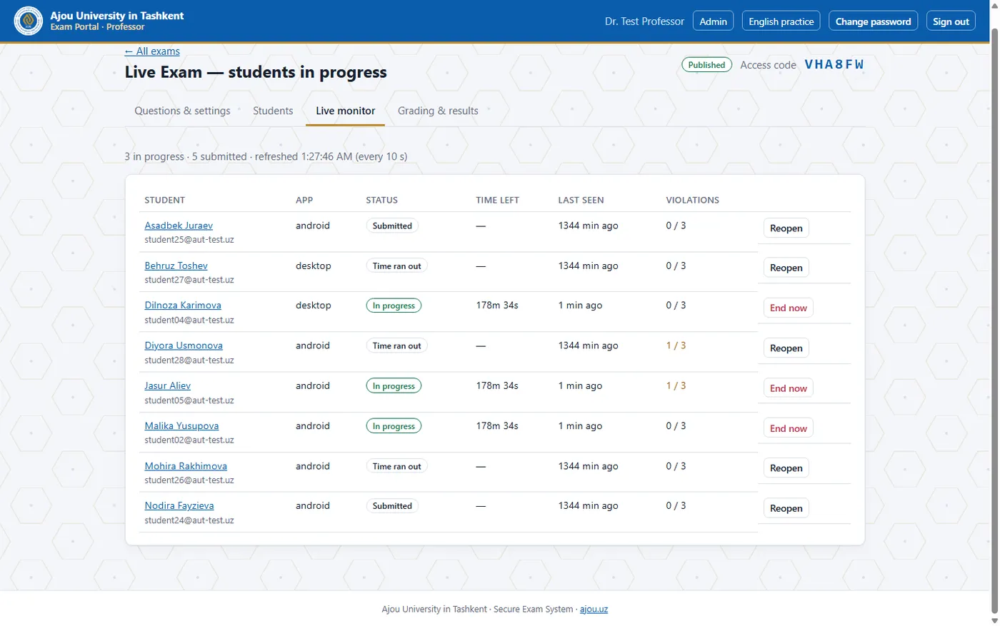
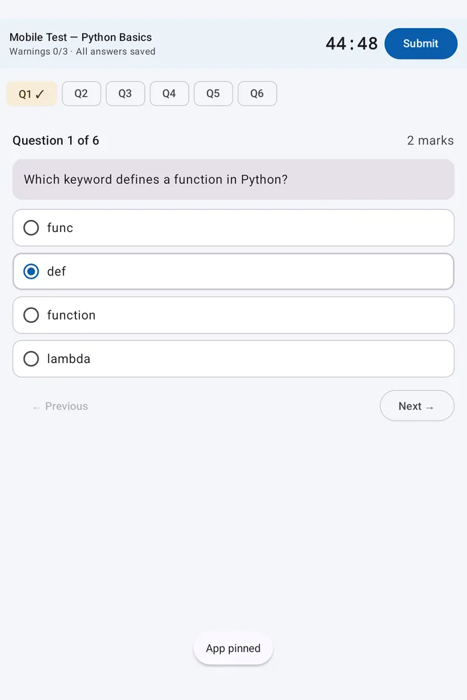
Paper exams need printing, rooms and invigilators, and every sheet is marked by hand. In programming courses, professors run student code one submission at a time. Generic quiz tools do not secure the student's device and cannot run code; commercial proctoring charges per student and often stores data abroad.
AUT Secure Exam runs on the university's own server, uses open-source software, and works on the computers and phones students already have. No per-student licence fees, no printing, results in seconds, and every exam event recorded.
The Windows app locks the full screen; the Android app pins itself during the exam. Leaving the exam, switching windows or pasting from outside is recorded and reported.
Multiple choice is marked instantly. Programs (Python, Java, C++) run against the professor's test cases in an isolated Judge0 sandbox; each passed test earns its marks.
Professors see every student's time left, last activity and integrity warnings, and can end or reopen an attempt after a technical problem.
Every change is saved within a second, through network drops. The timer runs on the server, so closing the app never stops it; students resume after a crash.
Students, professors and administrators each see only what they should. Hourly backups, an audit log, account locking after 10 wrong passwords, and results exported to a spreadsheet.
Speaking, writing, reading and listening at three difficulty levels with instant band estimates. Speech is transcribed on the university's own server with Whisper.
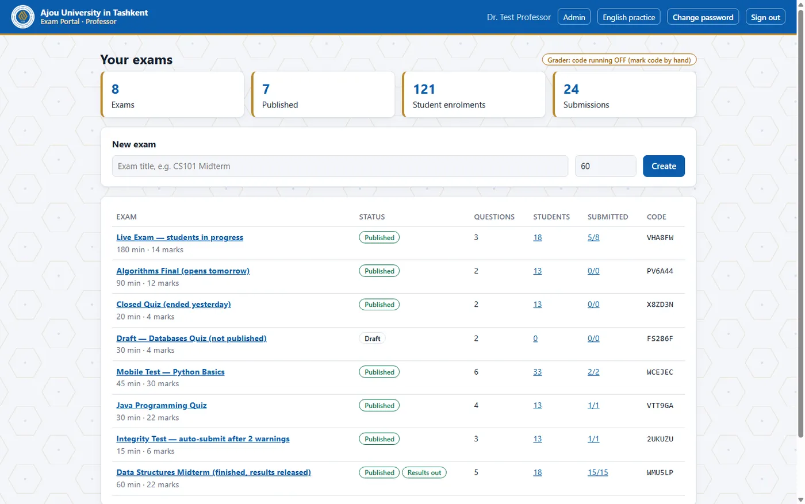
All exams at a glance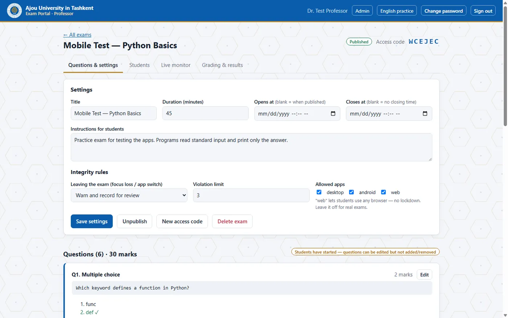
Exam settings and integrity rules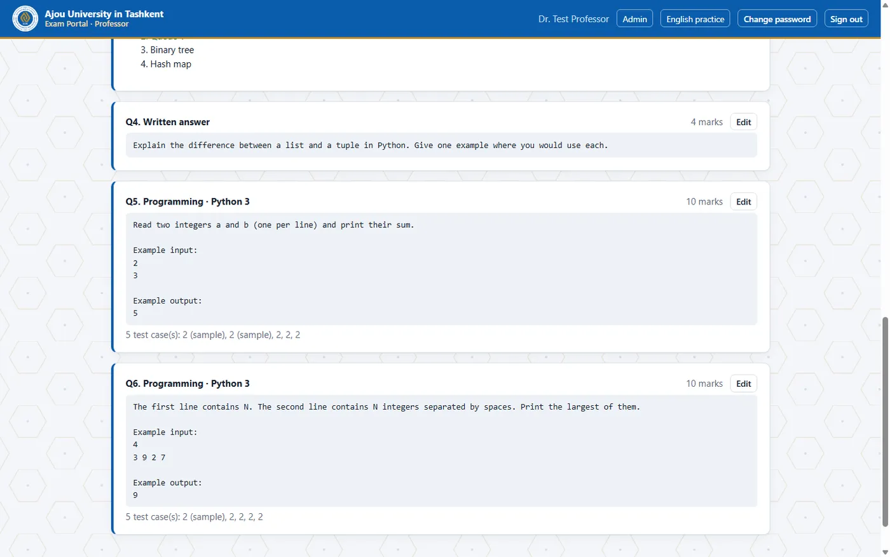
Programming question with test cases Live monitor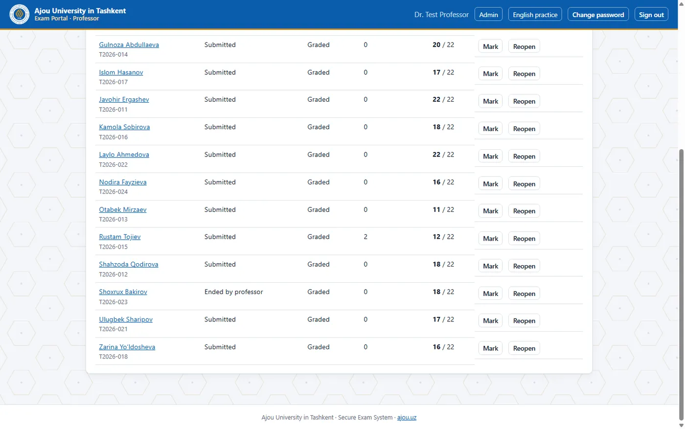
Results table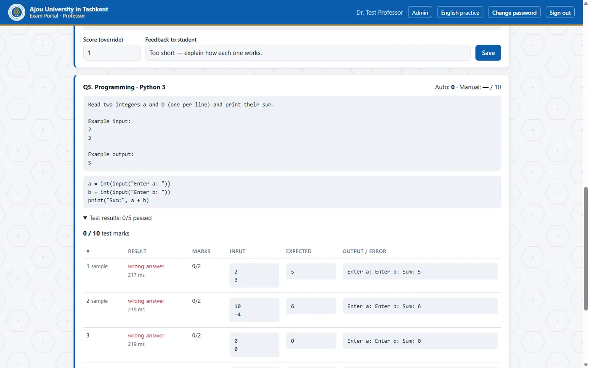
Marking written answers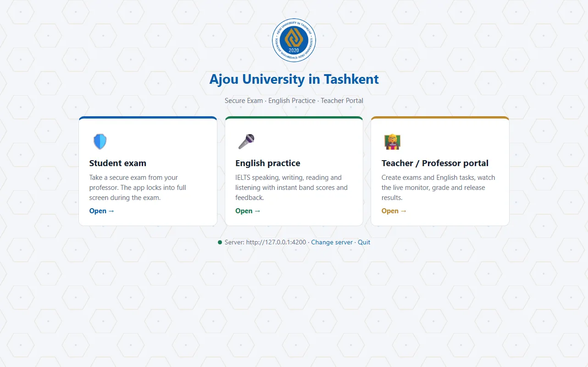
Home screen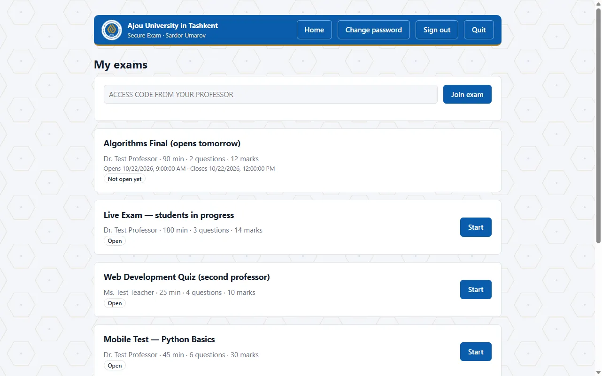
My exams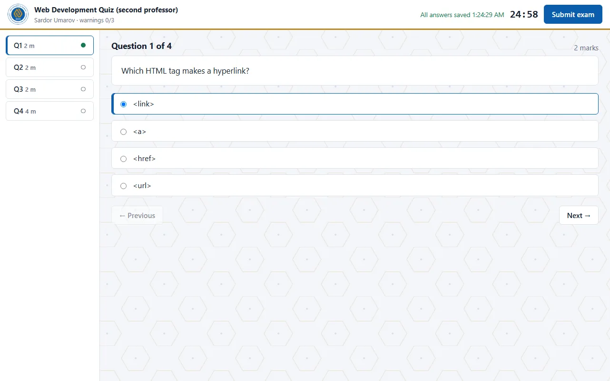
Answering, with the server timer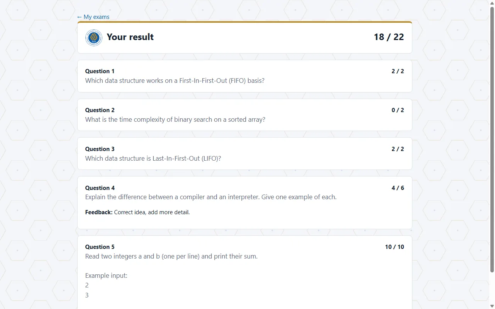
Released resultAbout 7 minutes: the problem, the solution, technology, a complete live demo, verified performance and the roadmap.
Load tests in October 2026 on one laptop (Intel Core i5-13500H, 16 GB RAM) running both the server and the simulated students; 95 % of every kind of request answered in under one second. The university server will be measured with the same test before go-live.
Install the test app. It connects to the online test server when it is running, and otherwise works as an offline demo on the phone: create an account and take the demo exams (access code DEMO1 adds one more).
If Android asks, allow "Install unknown apps" for your browser.
Portal, student exams, English practice and the Windows app, available while the organiser has the test server online.
Open the test serverTest data only. Do not use real passwords.
Students: in the app tap Student exam, then Create an account (any e-mail, a password of 8 or more characters).
Professors: sign up in the portal with the professor code from your department, or ask an administrator for an account.
| Manual | English | O‘zbekcha | Русский |
|---|---|---|---|
| Student manual | |||
| Professor manual | |||
| Developer manual |
The Windows app (112 MB) is on the exam server's download page.
Electron (Windows) · Kotlin and Jetpack Compose (Android) · HTML, CSS and JavaScript (web)
Node.js 22 · Express · JSON Web Tokens · scrypt password hashing
SQLite (open source, WAL mode) · hourly backups · audit log
Judge0 sandbox in Docker · Python, Java, C++
Ubuntu Linux · nginx · Let's Encrypt HTTPS · systemd · one-file installer
Whisper speech-to-text on the server · optional AI examiner